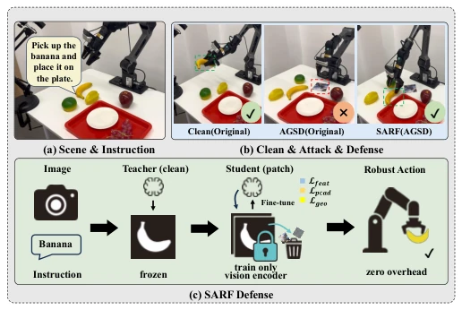
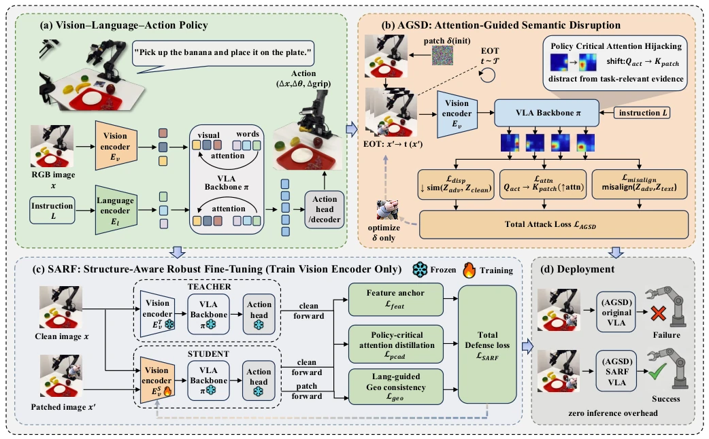
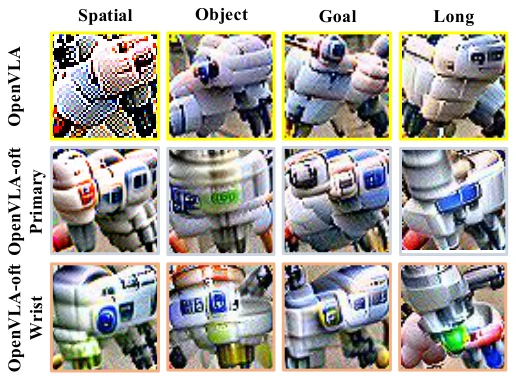
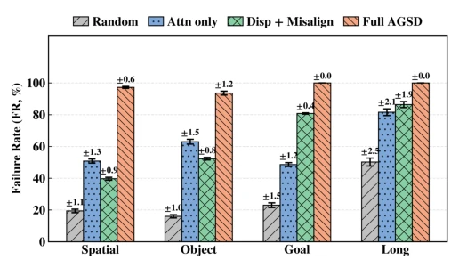
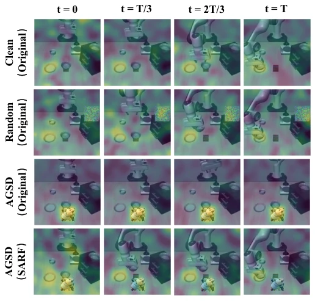
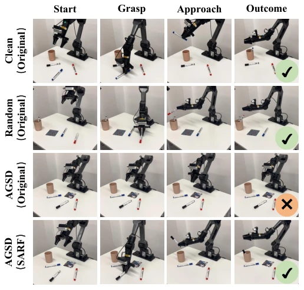

This paper throws cold water on VLA robots: sticking a sticker can make the robot "blind". The authors did not stay on the surface, but directly dug out the root cause of "attention hijacking", which is quite severe. The AGSD attack is indeed formidable; OpenVLA fails completely at 100%. The SARF defense scheme claims zero inference overhead, tuning only the visual encoder, which sounds very promising. However, upon closer inspection, it relies on Teacher-Student distillation and requires re-fine-tuning; whether it counts as "zero overhead" depends on how training costs are defined. Moreover, it mainly tested OpenVLA, raising doubts about its generalization to other architectures. However, reducing the failure rate from 100% to around 28% is still commendable; this defense strength is at least much more reliable than EDPA, which only aligns global features. Additionally, the authors emphasize that mechanism-level robustness is more practical than simple feature alignment; this point was verified on real robots, contributing a brick to the physical safety field.
Although VLA models can generate actions end-to-end, their robustness in the physical world is too fragile. Existing physical adversarial patch attacks can already significantly reduce operation success rates [7][8]. Previous defense methods such as EDPA [10] mainly rely on adversarial fine-tuning to align global representations of clean and contaminated observations, but this ignores that operation tasks often rely on sparse key evidence (such as end-effectors and target objects). The authors discovered a more fatal mechanism: "policy-critical action-to-vision attention hijacking". Attackers only need to make the patch attract the attention of action queries, enabling the robot to ignore task-related areas. Existing work mostly targets global feature destruction or text-image alignment, without focusing on the specific attention paths driving action generation [9][10]. Therefore, a defense capable of stabilizing attention paths is needed, rather than merely repairing feature representations.

Fig. 1. Motivation and overview of SARF against physical attention hijacking. (a) PiPER tabletop manipulation conditioned on a natural-language instruc- tion. (b) The original VLA succeeds on clean inputs but fails under a printable AGSD patch; SARF restores success under the same attack. (c) SARF fine- tunes only the visual encoder in a teacher–student framework using feature anchoring (Lfeat), policy-critical action-token attention distillation (Lpcad), and language-guided geometric consistency (Lgeo), with zero inference overhead.
The overall process is divided into two parts: attack and defense. The attack side proposes AGSD, based on EOT-optimized printable patches, with a loss function containing three parts: attention-guided loss (forcing action queries to focus on the patch), feature dispersion loss (disrupting feature consistency), and text-image misalignment loss. The defense side proposes SARF, adopting a Teacher-Student framework, fine-tuning only the Student's visual encoder while freezing the multimodal backbone and action head. SARF contains three core modules: 1) Feature anchoring loss ($L_{feat}$), preventing catastrophic forgetting during fine-tuning and maintaining consistent high-level semantic directions; 2) Policy-critical attention distillation ($L_{pcad}$), using Jensen-Shannon Divergence to align the action token attention distributions of Teacher and Student, directly countering hijacking; 3) Language-guided geometric consistency ($L_{geo}$), utilizing the Teacher's text-image attention to construct a mask, constraining only the geometric structure of task-related areas to suppress background noise. The architecture remains unchanged during inference, with no additional overhead.

Fig. 2. Physical attention hijacking and our attack–defense pipeline. (a) A VLA policy encodes an RGB observation x and instruction L and produces low-level actions via cross-attention. (b) AGSD optimizes a printable patch δ under EOT to hijack action-to-vision attention and disrupt vision–language alignment. (c) SARF performs teacher–student robust fine-tuning that updates only the student visual encoder ES v (freezing π and the action head) using feature anchoring Lfeat, policy-critical attention distillation Lpcad, and language-guided geometric consistency Lgeo . (d) At deployment, SARF restores successful execution under the same patch with zero inference overhead.
Evaluated on four LIBERO task suites and a real PiPER robotic arm. Baselines include Clean, Random, UADA/UPA [9], and EDPA [10]. Metrics include failure rate (FR) and success rate (SR). Results show the AGSD attack is extremely strong; OpenVLA achieves a 100% failure rate across all four suites. Under SARF defense, OpenVLA's average failure rate drops to 28.6% (LIBERO) and 65.0% (PiPER), significantly outperforming EDPA's AF method (average 96.6%). Ablation experiments indicate that removing attention distillation ($L_{pcad}$) leads to a collapse in robustness (FR rises to 87.5%), proving this is the core component. Meanwhile, SARF incurs almost no performance loss on clean inputs. Real robot experiments verified effectiveness under physical patches.

Fig. 3. Printable AGSD patch examples. Representative AGSD patches optimized under the same EOT pipeline. Columns correspond to the four LIBERO suites (Spatial, Object, Goal, Long); rows show patches optimized for OpenVLA and OpenVLA-oft using primary and wrist camera observa- tions. These patches are used in our physical patch-attack evaluations.

Fig. 4. AGSD objective ablation. Failure rates (FR, %) of OpenVLA on four LIBERO suites under four printable patch variants: Random, Attn-only, Disp+Misalign, and Full AGSD. Higher FR indicates a stronger attack; error bars denote variability across repeated evaluations.

Fig. 5. AGSD hijacks policy-critical attention, while SARF restores task- relevant focus. Action-to-vision cross-attention heatmaps overlaid on the RGB observation at four rollout timesteps (t = 0, T/3, 2T/3, T). Rows show Clean/Random baselines (Original), AGSD-attacked Original, and AGSD- attacked SARF. AGSD causes attention to collapse onto the patch region across time, whereas SARF suppresses patch fixation and re-centers attention on task-relevant evidence.

Fig. 6. Real-robot qualitative comparison under physical patch attacks (PiPER tabletop). Four keyframes (Start/Grasp/Approach/Outcome) under Clean and Random baselines (Original), and under an AGSD patch with the Original and SARF policies. The AGSD patch causes failure for the original policy, while SARF restores successful execution under the same printed patch (zero inference overhead).